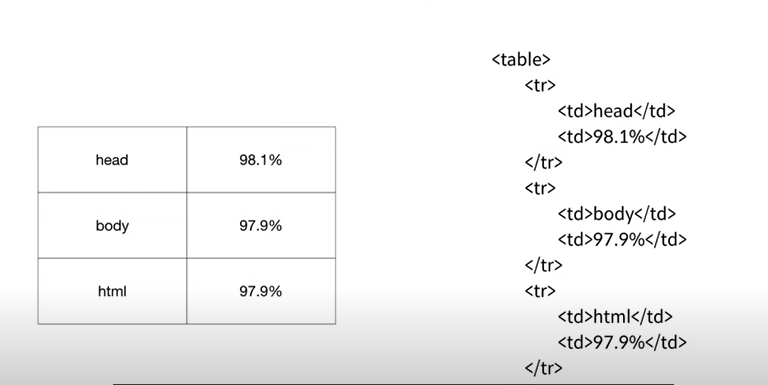

12.부모자식과 목록
< parent >
< child > < /child >
< /parent >
서로 포함관계로 연관되어 있을 때 부모자식,, 이런 부모자식 관계가 바뀐다.
사이가 좋은 항상 서로 존재하는 태그가 있다.
목차를 완성할 것이다.
그 과정에서 부모자식 관계 태그를 살펴볼 것이다.
1.뭐라뭐라 < br >로 목차를 나둘 수 있지만
목차에 쓰라고 만든 의미에 맞는 태그가 있으니 그걸 써야한다.의미에 맞게 사용
그래야 웹페이지가 더 가치있게 된다.
목록이라는 말 list 앞에서부터 두 글까 < li >
맥은 command cr 커서가 여러 개 생긴다. 아주아주 편리한 기능이죠...?
참가자들의 목차.. 띄어쓰기 하고 싶을 근데 ul이라는 태그가 있다.
< ol >
< li >html< /li >
< li >css< /li >
< li >Javascript< /li >
< /ol >
< ol >
< li >양민영< /li >
< li >이서영< /li >
< /ol >
리로드를 해보면 아까와 결과가 같다. < br >했을 때와
어디서부터 어디까지가 연관된 건지 경계를 짓기 위한 그룹핑을 하기 위한 부모 태그가 필요한 것이다.
두 개는 반드시 서로 같이 쓰인다.
목차가 3개가 아니라 1억개면 1,2,3을 1억개 써야함. 만약 1을 지워주고 싶다고 하면 시간이 엄청 걸린다.
구월해줄 방법
ul을 < ol >로 숫자를 지우고 리워 자동으로 숫자가 넘버링
< ol >와 < ul > l은 list의 약자
ordered list 의 약자 unordered list의 약자
목록과 ol, ul 태그를 배움
테이블에 활용가능, 3대..

처음으로
- 수업소개
- 실습의 동기
- 기획
- 코딩과 HTML
- html 코딩과 실습환경 준비
- 기본문법 태그
- 혁명적인 변화
- 통계에 기반한 학습
- 줄바꿈: br vs p
- html이 중요한 이유
- 최후의 문법 속성 & img
- 부모자식과 목록
- 문서의 구조와 슈퍼스타들
- HTML 태그의 제왕
- 웹사이트 완성